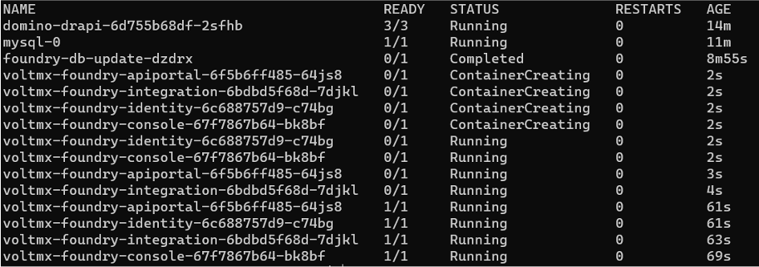

Install Volt MX Go server components
The procedures guide you in installing the following server components of Volt MX Go:
- Volt MX Go Foundry
- Domino REST API
Important
-
Using this installation option would require you to use your own Domino server.
-
Before starting the installation, make sure to verify that you meet the System requirements.
Info
When clicking the links in the steps in the following procedures, some links open in a new tab and direct you to related product documentation. Expect to switch between browser tabs when executing the procedures.
Install Domino REST API
Important
Make sure to check version compatibility between Volt MX Go and Domino REST API.
-
Downloaded the Domino REST API installer. For more information, see Download the Domino REST API in the HCL Domino REST API documentation.
-
Follow the links to the installation procedure based on your preferred installation platform:
-
Complete all the post-installation tasks.
For more information, see the Installation and configuration page in the HCL Domino REST API documentation.
Install Volt MX Go Foundry
Volt MX Go Foundry supports the following installation mechanisms:
- Use the Windows or Linux installers that use Install Anywhere to do the installation. It allows you to install a bundled Tomcat or JBoss app server or install it onto an existing app server (JBOSS single or multi-node, or WebLogic).
- Use the Command Line installer for advanced deployments.
- Use helm charts on one of the supported Kubernetes platforms, including OpenShift, AKS (Azure), EKS (AWS), and GKE (Google).
For using an installer
-
Download the Volt MX Go Foundry installer based on your preferred installation platform/option. For more information, see Download HCL Volt MX Go Release package.
-
Extract the installer from the downloaded ZIP file.
-
Follow the links to the installation guides based on your preferred installation platform/option:
Important
- The installation guides will indicate installation files and installation file download locations. You must use the installer you downloaded in Step 1.
- Make sure to check all the details and complete all the applicable procedures indicated in the sections in the installation guides.
For using helm charts on a supported Kubernetes platform
Important
If you participated in the Early Access program, you must cleanup your environment before proceeding, such as deleting the mxgo namespace, removing the EA repository reference, and removing the mxgo directory. You may want to create a backup copy of the ~/mxgo/drapi/values.yaml and ~/mxgo/foundry/values.yaml files so you can reuse the settings from them if you are using the same information such as hostnames, userids, and passwords. Use the following commands to cleanup your environment:
helm repo remove hclcr
kubectl delete namespace mxgo
rm -rf ~/mxgo
Prerequisite
Obtain authentication token from HCL Container Repository before proceeding.
1. Create a namespace and a temp directory for the charts
Run the following commands to create a namespace, set the current context to mxgo, create a temp directory for downloading the charts, and make it the current directory:
kubectl create namespace mxgo
kubectl config set-context --current --namespace=mxgo
mkdir ~/mxgo
cd ~/mxgo
Note
You must run the kubectl config set-context --current --namespace=mxgo command to set the current namespace context after each restart of Windows or Rancher Desktop.
2. Configure Helm to pull from HCL Container Repository
The procedure sets up Helm with the details necessary to authenticate with the HCL Container Repository. You will need your email and authentication token used with the HCL Container Repository.
-
Run the following command to set up Helm:
helm repo add hclcr https://hclcr.io/chartrepo/voltmxgo --username <your hclcr username> --password <your hclcr password>Example
helm repo add hclcr https://hclcr.io/chartrepo/voltmxgo --username user.name@example.com --password xx3ds2wNote
Use the CLI secret value you saved from obtaining authentication token from HCL Container Repository as your authentication token or password.
If you get an error message similar to the following:
Error: looks like https://hclcr.io/chartrepo/voltmxgo is not a valid chart repository or cannot be reached: failed to fetch https://hclcr.io/chartrepo/voltmxgo/index.yaml : 401 UnauthorizedMost likely, you haven't specified your username or authentication token correctly. Make sure the case and content matches exactly what's listed on the HCL Container Repository site and retry.
3. Download Foundry charts
-
Run the following command to make sure that the chart information for the repositories is up-to-date.
helm repo updateSee Volt MX Go and Helm chart version compatibility to know the latest Helm chart version.
-
Run the following commands to download the Foundry charts, unpack the files, and move the
values.yamlfile to the current directory:mkdir foundry cd foundry helm pull hclcr/voltmx-dbupdate helm pull hclcr/voltmx-foundry tar -xzf voltmx-foundry-1.n.n.tgz tar -xzf voltmx-dbupdate-1.n.n.tgz mv voltmx-foundry/values.yaml ./ mv voltmx-foundry/init-guids.sh ./ chmod +x init-guids.shNote
The foundry and dbupdate chart names have a version string in the filename. The
helm pullcommand will pull down the latest version of the charts. Ensure your tar command uses the correct matching file names. -
Volt MX Go Foundry uses several Global Unique IDs to distinguish different installations of Volt MX Go Foundry. Invoke the init-guids script to generate the IDs using the following command:
./init-guids.sh --new -
Edit the
values.yamlfile to update theimageCredentialsby replacingyour-emailandyour-authentication-tokenwith your email and authentication token used with the HCL Container Repository.imageCredentials: username: your-email password: your-authentication-tokenNote
Use the CLI secret value you saved from obtaining authentication token from HCL Container Repository as your authentication token or password.
-
Locate the following line in the file and add your Volt MX Go Foundry server domain name setting:
serverDomainName:Whatever server domain name you specify here, you need to ensure that it's resolvable. There is no additional work if you have already registered your server domain name in DNS. However, if you haven't registered it, you must add it to the server's /etc/hosts file Ensure Foundry Hostnames are resolvable, substituting your server domain name. Additionally, you must make the same updates in k3s's coredns config map as described in For K3s only again substituting your server domain name.
-
Locate the following lines in the file and add your Volt MX Go Foundry database details:
### Database details ### # Database type which you want to use for Volt MX Go Foundry (String) # Possible values: # "mysql" for MySQL DB server # "sqlserver" for Azure MSSQL or SQLServer # "oracle" for Oracle DB server dbType: # Database server hostname (String) dbHost: # Database server port number (Number). This can be empty for cloud managed service. dbPort: # Database User and password - you may set a single general userid/password here, # or you may set specific userid/password combinations below. If set, the # specific values override the general dbUser/dbPass. # Database server user (String) dbUser: # Database server password (String) enclosed in quotes dbPass: -
For more advanced configuration options, see Configuration in the Installation Guide for Volt MX Foundry Containers Helm Installation.
-
Save the file and exit.
4. (Optional) Perform advanced scenario procedures.
Perform the procedures under Advanced Scenarios.
5. Deploy Foundry's dbupdate to create the databases.
-
Run the following Helm install command to deploy Foundry's dbupdate:
helm install dbupdate voltmx-dbupdate -f values.yaml -
Run the following command to verify deployment completion of Foundry's dbupdate:
kubectl get pods -o wide -wThe output should be similar to the following and will update over time:
NAME READY STATUS RESTARTS AGE domino-drapi-6d755b68df-2sfhb 3/3 Running 0 6m13s mysql-0 1/1 Running 0 2m37s foundry-db-update-dzdrx 1/1 Running 0 24s foundry-db-update-dzdrx 0/1 Completed 0 65s foundry-db-update-dzdrx 0/1 Completed 0 67s foundry-db-update-dzdrx 0/1 Completed 0 68s -
Once the foundry-db-update pod shows Completed in the STATUS column, the databases have been created. Press
Ctrl-cto stop the kubectl command.
6. Install Volt MX Go Foundry
-
Run the following Helm install command to deploy Volt MX Go Foundry:
helm install foundry voltmx-foundry -f values.yaml -
Run the following command to verify when the Volt MX Go Foundry install is ready:
kubectl get pods -o wide -wThe output should be similar to the following and will update over time:

-
Monitor all the foundry pods except for the foundry-db-update pod as it has already been completed. Once the other foundry pods have a 1/1 state in the READY column, press
Ctrl-cto stop the kubectl command.
Volt MX Go Foundry is now available at http://foundry.mymxgo.com/mfconsole/.
Note
- If you defined a different Volt MX Go Foundry hostname, the Foundry URL would be the defined Foundry hostname concatenated with
/mfconsole/. -
If you want to access this deployment from a remote machine, you most likely need to update the
/etc/hostsfile on the remote machine as well. -
To create an account, see Create a Volt MX Go Foundry administrator account.
-
To connect to Domino server from your Notes client, see Connect to Domino server from your Notes client.
7. (Optional) Perform monitoring procedures
Perform the procedures under Monitoring in the HCL Volt MX documentation.
Note
The procedures are for enabling important monitoring features such as Metrics Server, Elastic Stack, Kuberhealthy.
8. (Optional) Perform post installation tasks
Perform the procedures under the Post Installation Tasks in the HCL Volt MX documentation.
Additional information
After completing the installation of Domino REST API and Volt MX Go Foundry, proceed to Install Volt MX Go Iris.